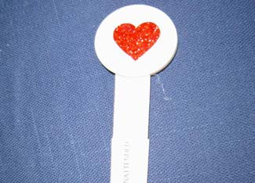
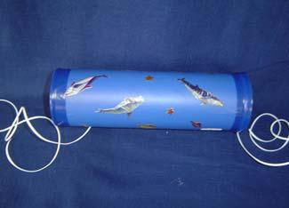
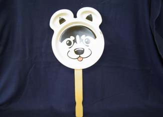
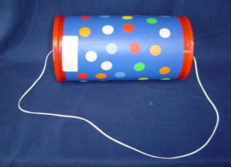
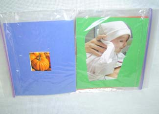
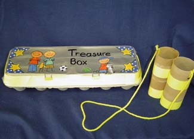

Six Fun Toys You Can Make At Home
Bring the fun of handmade toys to new heights with these simple instructions for recycled, educational toys for toddlers.
By Aly Van Dyke
Dec. 17, 2008
Many of us have witnessed the magical moment when a 1-year-old gets that very first “big” toy - and promptly throws it aside to play with the box it came in.
Parents, relatives and friends can spend a good deal of money on flashy and high-tech toys, but the truth is, that’s pretty unnecessary. Kids are fairly easily entertained, and many fun - and educational - toys can be made at home with recycled materials.
Babies learn more during the first three years of their life than at any other time. At specific times in a child’s development, the brain focuses on developing certain behaviors - such as motor and language skills. Neurologists refer to these times as “windows of opportunity.” With proper stimulation during these windows, babies can learn different behaviors quicker and more efficiently, which will help them succeed throughout their lives.
Because children like to play and explore, toys are a perfect way to stimulate the brain at specific times of development. And these toys don’t have to come from toy tycoons or department stores - you can make them right at home.
The toys listed below were created by Topeka Public Schools Parents As Teachers (PAT) program as part of an interactive and developmental learning program. PAT started in the 1970s as a way to integrate parents and family into early childhood education as a way to improve entrance-level abilities among kindergarteners. PAT works with parents and children from the time the baby is in the womb to when the child is 5 years old; specific programs vary among school districts.
Each toy is specific to a particular age and has scientific rationale behind the various activities it encourages. Most of these toys involve interaction between the parent and the child, to develop the critical relationship between children and their parents.
1 1/2 to 3 months
The first three month’s of your child’s life involve critical brain development in visual recognition. Tracking tools help children this age learn to use both eyes to follow movement, which will help them become better readers, among other things.
Tracking Toy
- Paper - construction paper works best, but really any would suffice.
Note: at this age, babies are more receptive to high-contrast colors, so red, black and white construction paper is suggested. - Trace pattern - cookie cutter outlines work fine
- Tongue depressor or Popsicle stick
- Trace and cut pattern out of paper.
- Tape the cutout onto the stick.
Note: The toy will last longer if the pattern is laminated, but that’s optional.
Place your baby on his or her back and hold the tracking toy 8 to 10 inches from his or her face. Move the toy side to side, making sure your baby follows the toy with both eyes.
5 1/2 to 8 months
At 5 1/2 to 8 months, your child is learning to move and understand his or her world in different ways. Objects that make noise when hit or kicked encourage children to develop motor skills. At this time, hide-and-seek and peek-a-boo games help children problem-solve and understand object permanence, that just because he or she can’t see something, doesn’t mean it has disappeared forever.
Kick the Can
- Empty can (preferably Pringles Potato Chip can)
- Jingle bells (2-3)
- Lanyard (2 pieces, 18 inches long)
- Hot glue gun
- Stickers
- Contact paper (bright color)
- Book tape or clear contact paper
- Hammer and thick nail
- Punch a hole in each end of the can with a hammer and a nail.
- String lanyard through each hole and tie a knot to secure.
- Put two to three jingle bells inside the can.
- Secure lid with hot glue gun.
- Cover can with color contact paper and decorate with stickers.
- Cover decorated can with clear contact paper or book tape to keep baby from picking stickers off.
Tie the can between two chair legs or across a crib. Place the baby underneath and show him or her how to raise his or her legs to kick at the can. Use this several times to a day to exercise the baby’s muscles, which will later be used for crawling and walking.
Peek-A-Boo Animal
- Animal Face paper plates made by Hefty (if you can’t find these, a big picture of an animal or a baby would work too)
- Paper towel tube
- Hot glue gun or duct tape
- Attach animal face to tube using hot glue gun.
Play peek-a-boo with the toy by putting the animal face in front of yours and removing it. It’s also a good idea to say your baby’s name and sound excited to evoke a response to inflection and tone.
1 year
Though your child may not be walking yet, around one year you can start introducing the concept of pull toys. These can be basic - made from Pringles cans or plastic tennis ball containers - or more advanced, like these three wooden pull toys. You can also experiment by placing different materials inside the can to make noises when your child pulls the toy around the home. Just be sure to secure the toy and always have an adult present. These toys are meant to foster development and interaction, so the best results come when a parent or adult plays with the child, rather than watching them while attending to other things.
Musical Pull Toy
- Cylindrical can with lid (coffee, oatmeal, formula, etc.)
- Colored contact paper
- Stickers
- Scissors
- Lanyard
- Jingle bells
- Hot glue gun
- Clear contact paper or book tape
- Hole punch and hammer
- Cover can with colored contact paper.
- Decorate can with stickers.
- Punch holes in lid and can bottom using hole punch and hammer.
- Place jingle bells inside can.
- Thread lanyard through both holes and tie both ends together, making the lanyard loop no more than 18 inches long for child to pull with.
- Secure lid with hot glue gun.
- Seal can and edge of lid with clear contact paper or book tape.
Encourage your child to pull the toy while walking around the house. PAT says this encourages your child to develop smooth and efficient movements for walking.
Note: If you already made the Kick the Can toy featured above, you can simply shorten the strings and tie them together to create this pull toy.
Over the course of the year, this toy can also encourage backward movement. But be patient, backward movement should come only after your child is fairly comfortable walking forward.
21 months
Children may start to string words together once they have about 50 words in their vocabulary, or by around 18 months. However, their sentences will usually be missing certain parts of speech, such as adjectives and some verbs. There are plenty of ways to help your child expand and remember his or her vocabulary, though the best way is usually practice. Talk with your baby all the time. Repeat what he or she says and say things the way things should be said (PAT uses the example of when your child says, “Daddy work,” you say, “Yes, Daddy went to work”). The following activity will help your child expand upon the words he or she has already learned by turning the words into phrases.
Word Book
- 4 Ziploc bags (sandwich size)
- 4 pieces of construction paper cut to Ziploc bag size.
- Glue or double sided tape
- Scissors
- Old magazine
- Stapler or sewing machine
- Tape (if stapler is used)
- Marker
- Sew or staple four Ziploc bags together at closed ends (if stapler is used, put tape over exposed staples).
- Make a list of eight words the child knows.
- Look for pictures of those activities or objects in magazines and cut the pictures out.
- Glue (or use double sided tape) to attach one picture on each side of the four pieces of construction paper.
- Write the word the child can say under the pictures and add one or two other words to it. (PAT uses the example of writing “big cat” or “the cat is sleeping” for a picture of a cat.)
- Slip the sheets into the bags and close securely.
Hold the book so your child can see the photos and look at the different pages of the book. Talk about each of the pictures and occasionally ask him or her to point to something in the picture. PAT says this book will help your child associate words with pictures and learn to formulate sentences, and suggests that the book should be read several times a week.
32 months
By 32 months, your child will have already developed the ability to walk and talk. He or she will also have begun to be more creative and purposeful with play. Rather than focusing on bright colors and different noises and textures, your child will start to perform two-step tasks and invent new ways to play with old toys. Acting out everyday activities and creating fun, interactive games will help your child expand his or her creativity - and bring you even closer together. Try taking your child on an adventurous nature-treasure hunt with the following activity.
My Treasure Box and Toy Binoculars
- Two empty toilet paper tubes
- Yarn
- Stapler
- Colored masking tape (optional)
- Hole punch
- Egg carton
- Stickers (optional)
Binoculars
1. Tape or staple the two toilet paper tubes together.
2. Punch holes on either side of the tubes and string yarn through the holes to make a neck strap.
Treasure box
1. Decorate egg carton with colored tape and stickers and print (or draw) a “My Treasure Box” label on the top. Feel free to have your child help you in this stage.
Take your child on a nature walk to find treasures. Demonstrate how to use the binoculars to find treasures and place them in the egg carton.
PAT offers plans for toys for every month from prenatal to 5 years of age. If you’re looking for a great, inexpensive gift for your child or a child of a friend or relative, contact your local PAT program. Visit the PAT Web site for more information about the program and contact information for programs near you. The program offers many more parent-education services, such as home visits by certified staff, quarterly reviews and child screening as well as interactive game nights for both moms and dads.
If you have any homemade toy ideas, list them below.
For more homemade toy ideas, visit Toys to Build for the Young and the Young at Heart.
|
 TOPEKA SCHOOLS PAT PROGRAM This tracking tool uses a poker chip and a tongue depressor. Tracking tools are perfect for newborns because they teach babies to use both eyes simultaneously. |
 TOPEKA SCHOOLS PAT PROGRAM Here are some other tracking tools using animal cut outs. You can also choose to laminate these toys so they last longer. |
 TOPEKA SCHOOLS PAT PROGRAM Tie this toy between two chairs and let your 5 1/2-to-8-month old learn to use his or her feet by kicking this can decorated personally by you! |
|
 TOPEKA SCHOOLS PAT PROGRAM Play peek-a-boo with your baby behind this fun animal face to help your child understand object permanence. |
 TOPEKA SCHOOLS PAT PROGRAM Help your child learn to walk - forward and backward - more smoothly by creating this musical pull toy out of a Pringles can. This can easily be transformed from the Kick the Can activity mentioned previously. |
 TOPEKA SCHOOLS PAT PROGRAM Here's yet another way to use Ziploc bags. Create a word book out of words your child already knows to help him or her learn to put sentences together. |
|
 TOPEKA SCHOOLS PAT PROGRAM Go on exciting scavenger hunt through nature by creating this fun treasure-hunting game. |
|
|